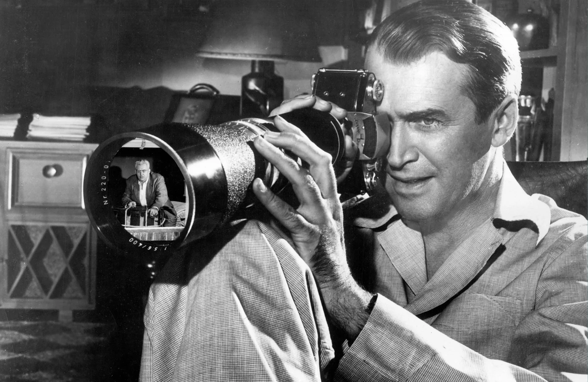
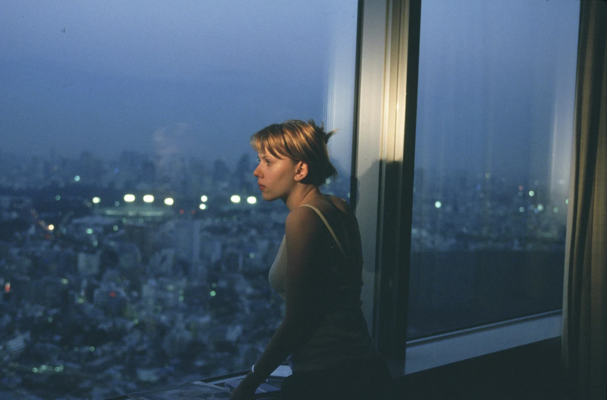
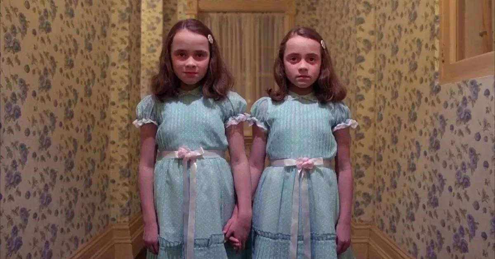

For the love of film.



ABOUT FRAME No. 1
New to cinema?
Start here.
A starting point for film lovers.FRAME No. 1 was created with the intention of making cinema easier to explore. With so many films to choose from, it can be difficult to know where to begin—especially when the titles and directors are unfamiliar. Created with a love of film, this collection brings together classics and other essential watches to offer a clear starting point. Through films, director profiles and checklists, FRAME No. 1 helps new viewers build their cinema knowledge, discover what they enjoy and become film lovers, one movie at a time.
Opening images: Rear Window — TCM publicity image; Lost in Translation — Park Circus; The Shining — ACMI. Film images remain copyright their respective rights holders. All image credits.